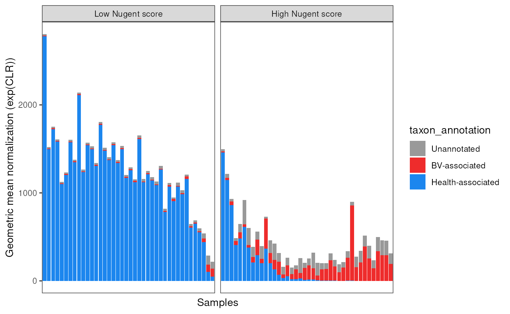
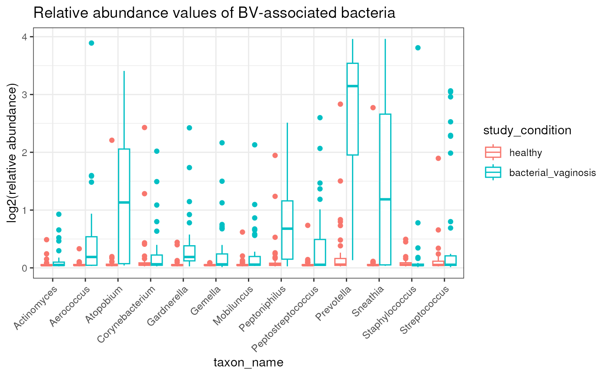
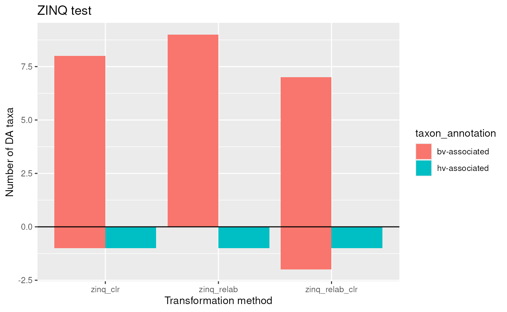
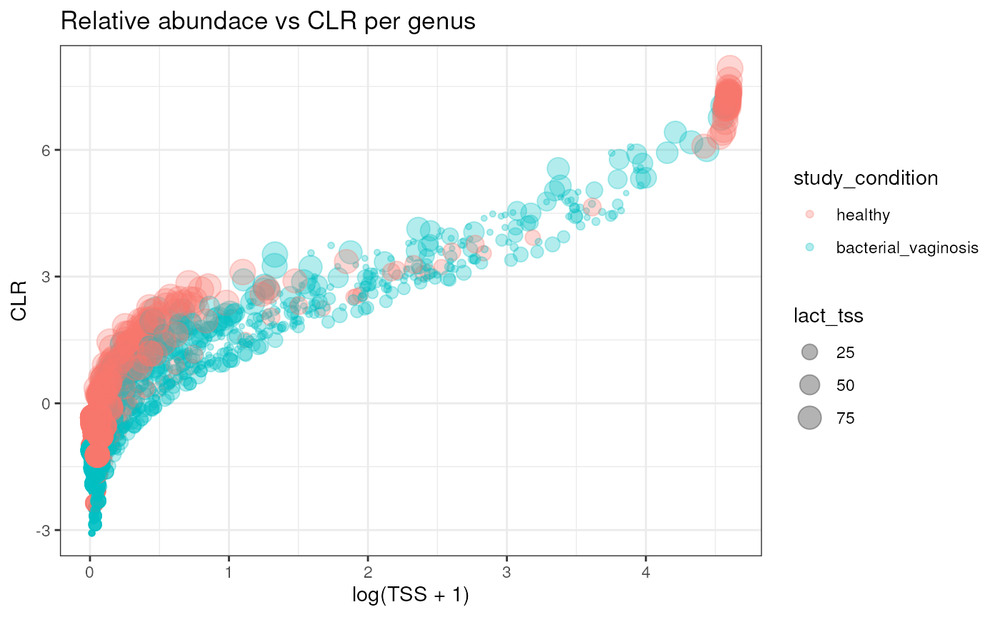
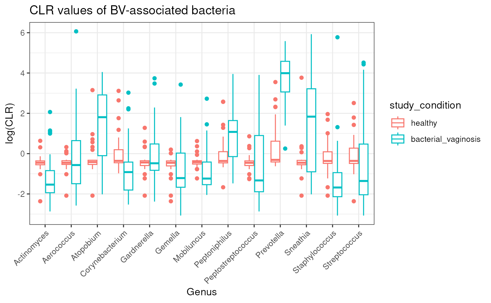
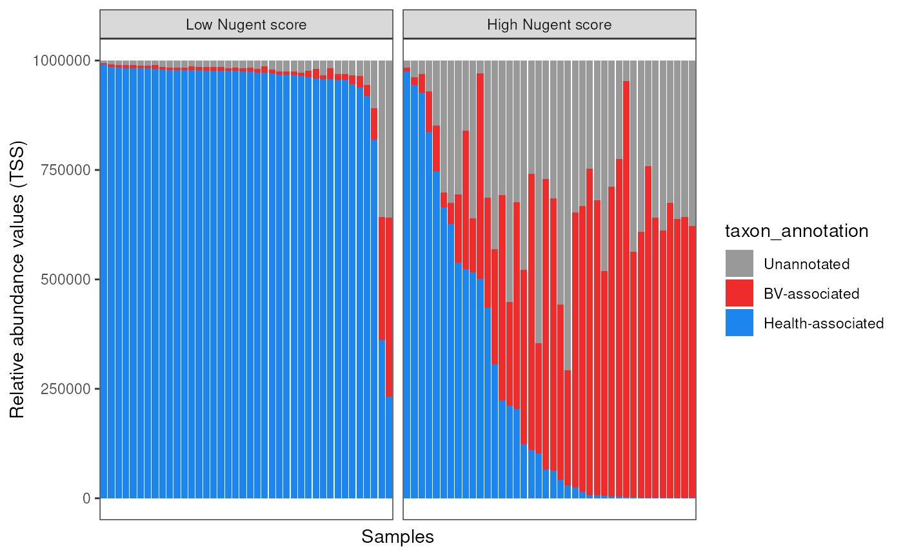

Ravel_2011_16S_BV - Bacterial vaginosis
Source:vignettes/articles/Ravel_2011_16S_BV.Rmd
Ravel_2011_16S_BV.Rmd
library(MicrobiomeBenchmarkDataAnalyses)
library(MicrobiomeBenchmarkData)
library(mia)
library(phyloseq)
library(dplyr)
library(benchdamic)
library(purrr)
library(ggplot2)
library(gridExtra)
library(ggpubr)
library(tidySummarizedExperiment)Introduction
In this vignette, several differential abundance (DA) methods will be compared using the Ravel_2011_16S_BV dataset. Lactobacillus is expected to be enriched in healthy vagina (HV) samples and other taxa, such as Gardnerella and Prevotella, are expected to be more abundant or enriched in bacterial vaginosis (BV) samples.
Data
Import, summarize by genus, and filter
- Select equal number of samples per ethnicity group. This was based on the minimum number of samples in an ethnicity.
- Summarize (agglomerate) by genus.
dat_name <- 'Ravel_2011_16S_BV'
conditions_col <- 'study_condition'
conditions <- c(condB = 'healthy', condA = 'bacterial_vaginosis')
tse <- getBenchmarkData(dat_name, dryrun = FALSE)[[1]]
## Select equal number of samples per ethnicity group
col_data <- tse |>
colData() |>
as.data.frame() |>
dplyr::filter(study_condition %in% conditions)
row_names_list <- col_data |>
{\(y) split(y, factor(y$ethnicity))}() |>
{\(y) map(y, ~split(.x, .x$study_condition))}() |>
unlist(recursive = FALSE) |>
map(rownames)
min_n <- row_names_list |>
map_int(length) |>
min()
set.seed(4567)
select_samples <- row_names_list |>
{\(y) map(y, ~ sample(.x, min_n, replace = FALSE))}() |>
unlist(use.names = FALSE)
tse_subset <- tse[, select_samples]
## Summarize by genus
tse_genus <- agglomerateByRank(
tse_subset, rank = 'genus', na.rm = FALSE, onRankOnly = FALSE
)
## Filter low abundance/presence taxa
tse_genus <- filterTaxa(tse_genus, min_ab = 1, min_per = 0.2)
rownames(tse_genus) <- editMiaTaxaNames(tse_genus)
## Set study conditions in the right order for analysis
colData(tse_genus)$study_condition <-
factor(colData(tse_genus)$study_condition, levels = conditions)
tse_genus## class: TreeSummarizedExperiment
## dim: 32 80
## metadata(1): agglomerated_by_rank
## assays(1): counts
## rownames(32): genus:Lactobacillus genus:Prevotella ...
## genus:Anaeroglobus genus:Bulleidia
## rowData names(7): kingdom class ... species taxon_annotation
## colnames(80): S250 S383 ... S325 S276
## colData names(17): dataset gender ... nugent_score_category
## community_group
## reducedDimNames(0):
## mainExpName: NULL
## altExpNames(0):
## rowLinks: NULL
## rowTree: NULL
## colLinks: NULL
## colTree: NULLConvert to phyloseq
ps <- makePhyloseqFromTreeSummarizedExperiment(tse_genus)
sample_data(ps)[[conditions_col]] <-
factor(sample_data(ps)[[conditions_col]], levels = conditions)
ps## phyloseq-class experiment-level object
## otu_table() OTU Table: [ 32 taxa and 80 samples ]
## sample_data() Sample Data: [ 80 samples by 17 sample variables ]
## tax_table() Taxonomy Table: [ 32 taxa by 6 taxonomic ranks ]Benchdamic workflow
Set DA methods
## Normalization methods supported in benchdamic
norm_methods <- set_norm_list()
# norm_methods <- norm_methods[names(norm_methods) != "norm_CSS"]
ps <- runNormalizations(norm_methods, ps, verbose = FALSE)
zw <- weights_ZINB(ps, design = conditions_col)
DA_methods <- set_DA_methods_list(conditions_col, conditions)
## The following chunk of code was written for compatibility with
## a more recent version of Seurat implemented in benchdamic
for (i in seq_along(DA_methods)) {
if (grepl("Seurat", names(DA_methods)[i])) {
names(DA_methods[[i]]$contrast) <- NULL
} else {
next
}
}
# These methods throw an error, so they must be removed
# DA_methods <- DA_methods[!names(DA_methods) == 'DA_ALDEx2.1']
# DA_methods <- DA_methods[!names(DA_methods) == 'DA_corncob.1']
# DA_methods <- DA_methods[!names(DA_methods) == 'DA_edgeR.1']
names(DA_methods)## [1] "DA_edgeR.1" "DA_edgeR.1" "DA_DESeq2.1"
## [4] "DA_DESeq2.1" "DA_limma.1" "DA_limma.1"
## [7] "DA_metagenomeSeq.1" "DA_ALDEx2.1" "DA_MAST.1"
## [10] "DA_Seurat.1" "ancombc.1" "wilcox.3"
## [13] "wilcox.4" "ZINQ.9" "ZINQ.10"
## [16] "lefse.12" "lefse.13"Run DA methods
tim <- system.time({
DA_output <- vector("list", length(DA_methods))
for (i in seq_along(DA_output)) {
message(
"Running method ", i, ": ", names(DA_methods)[i], " - ", Sys.time()
)
DA_output[[i]] <- tryCatch(
error = function(e) NULL,
runDA(DA_methods[i], ps, weights = zw, verbose = FALSE)
)
}
DA_output <- purrr::list_flatten(DA_output, name_spec = "{inner}")
DA_output <- purrr::discard(DA_output, is.null)
})
tim## user system elapsed
## 13.375 1.590 13.392Enrichment
Get direction
direction <- get_direction_cols(DA_output, conditions_col, conditions)
head(direction)## edgeR.TMM edgeR.TMM.weighted DESeq2.poscounts
## "logFC" "logFC" "log2FoldChange"
## DESeq2.poscounts.weighted limma.TMM limma.TMM.weighted
## "log2FoldChange" "logFC" "logFC"Create enrichment. Threshold values is based on adjusted p-values
enrichment <- createEnrichment(
object = DA_output,
priorKnowledge = prior_info,
enrichmentCol = "taxon_annotation",
namesCol = "taxon_name",
slot = "pValMat", colName = "adjP", type = "pvalue",
direction = direction,
threshold_pvalue = 0.1,
threshold_logfc = 0,
top = NULL,
alternative = "greater",
verbose = FALSE
)Create enrichment plot
## Not a plot. This is a data.frame that should be used as input for
## the plot_enrichment2 function.
enrich_plot <- plot_enrichment(
enrichment = enrichment,
enrichment_col = "taxon_annotation",
levels_to_plot = c("hv-associated", "bv-associated"),
conditions = c(condB = "HV", condA = "BV")
)
## The actual plot.
enrich_plot2 <- plot_enrichment_2(
enrich_plot,
dir = c(up = 'BV', down = 'HV')
) +
theme(
axis.title = element_text(size = 17),
axis.text = element_text(size = 15),
legend.text = element_text(size = 13),
strip.text = element_text(size = 17)
)
# enrich_plot2Plot putative true positves and true negatives ratio
Create ‘positives’ object. No thresholds were added.
positives <- createPositives(
object = DA_output,
priorKnowledge = prior_info,
enrichmentCol = "taxon_annotation", namesCol = "taxon_name",
slot = "pValMat", colName = "rawP", type = "pvalue",
direction = direction,
threshold_pvalue = 1,
threshold_logfc = 0,
top = seq.int(from = 0, to = 20, by = 2),
alternative = "greater",
verbose = FALSE,
TP = list(c("DOWN Abundant", "hv-associated"), c("UP Abundant", "bv-associated")),
FP = list(c("DOWN Abundant", "bv-associated"), c("UP Abundant", "hv-associated"))
) |>
left_join(get_meth_class(), by = 'method') |>
relocate(method_class)Create putative positives plot
plots <- plot_positives(positives) |>
map( ~ {
.x +
theme(
axis.title = element_text(size = 17),
axis.text = element_text(size = 15),
legend.text = element_text(size = 13),
strip.text = element_text(size = 17)
)
})
k <- grid.arrange(grobs = plots, ncol = 3)
ggsave(
filename = "Figure2.pdf", plot = ePlot,
dpi = 300, height = 15, width = 15
)Perform DA with lefse, Wilcox, and ZINQ-Cauchy manually
tssFun <- function(x) {
(x) / sum(x) * 100
}
clrFun <- function(x) {
log(x / exp(mean(log(x))))
}
## Relative abundance (TSS - total sum scaling)
assay(tse_genus, "TSS") <- apply(assay(tse_genus, "counts") + 1, 2, tssFun)
assay(tse_genus, "CLR") <- apply(assay(tse_genus, "counts") + 1, 2, clrFun)
## No need for pseudocount in the next line
assay(tse_genus, "TSS + CLR") <- apply(assay(tse_genus, "TSS"), 2, clrFun)
## CLR transform
# assay(tse_genus, 'CLR') <- apply(assay(tse_genus), 2, function(x) {
# log((x + 1) / exp(mean(log(x + 1))))
# })
## Relative abundance + CLR transform
# assay(tse_genus, 'TSS + CLR') <- apply(assay(tse_genus, 'TSS'), 2, function(x) {
# # x / exp(mean(log(x)))
# log(x / exp(mean(log(x))))
# })
data <- tse_genus |>
as_tibble() |>
rename(taxon_name = .feature, sample = .sample) |>
mutate(
taxon_annotation = ifelse(
is.na(taxon_annotation), 'Unannotated', taxon_annotation
)
)
head(data)## # A tibble: 6 × 30
## taxon_name sample counts TSS CLR `TSS + CLR` dataset gender body_site
## <chr> <chr> <dbl> <dbl> <dbl> <dbl> <chr> <chr> <chr>
## 1 genus:Lactob… S250 565 30.6 4.86 4.86 Ravel_… female vagina
## 2 genus:Prevot… S250 194 10.6 3.80 3.80 Ravel_… female vagina
## 3 genus:Megasp… S250 677 36.7 5.04 5.04 Ravel_… female vagina
## 4 genus:Sneath… S250 24 1.35 1.74 1.74 Ravel_… female vagina
## 5 genus:Atopob… S250 227 12.3 3.95 3.95 Ravel_… female vagina
## 6 genus:Strept… S250 0 0.0541 -1.48 -1.48 Ravel_… female vagina
## # ℹ 21 more variables: ncbi_accession <chr>, library_size <dbl>,
## # sequencing_platform <chr>, pmid <dbl>, study_condition <fct>,
## # sequencing_method <chr>, variable_region_16s <chr>, country <chr>,
## # number_bases <dbl>, ethnicity <chr>, ph <dbl>, nugent_score <dbl>,
## # nugent_score_category <chr>, community_group <chr>, kingdom <chr>,
## # class <chr>, order <chr>, family <chr>, genus <chr>, species <chr>,
## # taxon_annotation <chr>Wilcox
Define function:
calcWilcox <- function(dat, val_col, log = FALSE) {
## Separate components
taxa <- split(dat, factor(dat$taxon_name))
taxa_names <- names(taxa)
taxa_annotations <-
dplyr::distinct(dplyr::select(data, dplyr::starts_with('taxon')))
## Perform Wilcoxon test
pvalues <- vector('double', length(taxa))
names(pvalues) <- taxa_names
formula_chr <- paste0(val_col, ' ~ study_condition')
for (i in seq_along(pvalues)) {
df <- taxa[[i]]
res <- stats::wilcox.test(formula = as.formula(formula_chr), data = df)
pvalues[[i]] <- res$p.value
}
## Adjust P-values
adj_pvalues <- stats::p.adjust(pvalues, method = 'fdr')
## Calculate fold change
log_fold_change <- vector('double', length(taxa))
lll <- vector('double', length(taxa))
for (i in seq_along(log_fold_change)) {
df <- taxa[[i]]
healthy <- df |>
dplyr::filter(study_condition == 'healthy') |>
{\(y) y[[val_col]]}()
bv <- df |>
dplyr::filter(study_condition == 'bacterial_vaginosis') |>
{\(y) y[[val_col]]}()
bv <- mean(bv)
healthy <- mean(healthy)
if (log) {
log_fold_change[i] <- bv - healthy
} else {
if (bv >= healthy) { # control is healthy, condition of interest is bv
log_fold_change[i] <- log2(bv / healthy)
} else if (bv < healthy) {
log_fold_change[i] <- -log2(healthy / bv)
}
}
}
## Combine results and annotations
pval_results <- data.frame(
taxon_name = taxa_names,
rawP = pvalues,
adjP = adj_pvalues,
logFC = log_fold_change
)
dplyr::left_join(pval_results, taxa_annotations, by = 'taxon_name')
}Perform statistical test:
wilcox <- list(
wilcox_counts = calcWilcox(data, 'counts'),
wilcox_relab = calcWilcox(data, 'TSS'),
wilcox_clr = calcWilcox(data, 'CLR', log = TRUE),
wilcox_relab_clr = calcWilcox(data, 'TSS + CLR', log = TRUE)
) |>
bind_rows(.id = 'method')Filter DA taxa
wilcox_DA <- wilcox |>
dplyr::filter(adjP <= 0.1, abs(logFC) > 0) |>
mutate(DA = ifelse(logFC > 0, "OA", "UA"))Plot
wilcox_DA |>
dplyr::filter(taxon_annotation != 'Unannotated') |>
count(method, taxon_annotation, DA) |>
mutate(n = ifelse(DA == 'UA', -n, n)) |>
mutate(method = sub('wilcox_', '', method)) |>
ggplot(aes(method, n)) +
geom_col(aes(fill = taxon_annotation), position = 'dodge') +
geom_hline(yintercept = 0) +
labs(
title = 'Wilcoxon test',
y = 'Number of DA taxa', x = 'Transformation method'
) 
# scale_y_continuous(limits = c(-3, 11), breaks = seq(-3, 11, 2))Plot the abundances of the taxa that were incorrect
incorrect_taxa_wilcox_clr <- wilcox_DA |>
dplyr::filter(
method == 'wilcox_clr', DA == 'UA',
taxon_annotation == 'bv-associated'
) |>
pull(taxon_name)
incorrect_taxa_wilcox_clr## [1] "genus:Actinomyces" "genus:Corynebacterium"
## [3] "genus:Gemella" "genus:Mobiluncus"
## [5] "genus:Peptostreptococcus" "genus:Staphylococcus"
## [7] "genus:Streptococcus"Let’s plot their values for each matrix
transformations <- c('counts', 'TSS', 'CLR', 'TSS + CLR')
l1 <- vector('list', length(transformations))
names(l1) <- transformations
for (i in seq_along(transformations)) {
mat <- assay(tse_genus, transformations[i])
l1[[i]] <- mat[incorrect_taxa_wilcox_clr,] |>
as.data.frame() |>
tibble::rownames_to_column(var = 'taxon_name') |>
as_tibble()
}
wilcox_raw <- bind_rows(l1, .id = 'transformation') |>
{\(y) pivot_longer(
y, cols = 3:ncol(y), values_to = 'value', names_to = 'sample'
)}() |>
left_join(data[,c('sample', 'study_condition')], by = 'sample')## Warning in left_join({: Detected an unexpected many-to-many relationship between `x` and `y`.
## ℹ Row 1 of `x` matches multiple rows in `y`.
## ℹ Row 1 of `y` matches multiple rows in `x`.
## ℹ If a many-to-many relationship is expected, set `relationship =
## "many-to-many"` to silence this warning.
head(wilcox_raw)## # A tibble: 6 × 5
## transformation taxon_name sample value study_condition
## <chr> <chr> <chr> <dbl> <fct>
## 1 counts genus:Actinomyces S250 0 bacterial_vaginosis
## 2 counts genus:Actinomyces S250 0 bacterial_vaginosis
## 3 counts genus:Actinomyces S250 0 bacterial_vaginosis
## 4 counts genus:Actinomyces S250 0 bacterial_vaginosis
## 5 counts genus:Actinomyces S250 0 bacterial_vaginosis
## 6 counts genus:Actinomyces S250 0 bacterial_vaginosisBox plot of incorrect values:
wilcox_genus_plot <- wilcox_raw |>
mutate(taxon_name = sub('genus:', '', taxon_name)) |>
mutate(
value = case_when(
transformation %in% c("counts", "TSS") ~ log(value + 1),
TRUE ~ value
)
) |>
# mutate(value = log(value + 1)) |>
filter(transformation != "TSS + CLR") |>
mutate(transformation = factor(
transformation, levels = c('counts', 'TSS', 'CLR'),
labels = c('log(counts + 1)', 'log(TSS + 1)', 'CLR')
# transformation, levels = c('counts', 'TSS', 'CLR', 'TSS + CLR' ),
# labels = c('log(counts + 1)', 'log(TSS + 1)', 'CLR', 'TSS + CLR')
)) |>
mutate(study_condition = factor(
study_condition, levels = c('healthy', 'bacterial_vaginosis'),
labels = c('HV', 'BV')
)) |>
ggplot(aes(taxon_name, value)) +
geom_boxplot(aes(color = study_condition)) +
facet_wrap(~ transformation, scales = 'free') +
labs(
y = 'Abundance values', x = 'Genus'
) +
scale_color_manual(
values = c('dodgerblue1', 'firebrick1')
) +
theme_bw() +
theme(
panel.grid.major.x = element_blank(),
legend.title = element_blank(),
axis.text.x = element_text(angle = 45, hjust = 1)
)## Warning: There was 1 warning in `mutate()`.
## ℹ In argument: `value = case_when(...)`.
## Caused by warning in `log()`:
## ! NaNs produced
wilcox_genus_plot
ggsave(
file = "Figure3.pdf", plot = wilcox_genus_plot,
dpi = 300, width = 9, height = 4
)
stats <- data |>
mutate(taxon_name = sub('genus:', '', taxon_name)) |>
filter(taxon_name %in% c('Actinomyces', 'Corynebacterium')) |>
group_by(study_condition, taxon_name) |>
summarise(
mean_counts = mean(counts),
sd_counts = sd(counts),
median_counts = median(counts),
mean_TSS = mean(TSS),
sd_TSS = sd(TSS),
median_TSS = median(TSS),
mean_CLR = mean(CLR),
sd_CLR = sd(CLR),
median_CLR = median(CLR),
mean_TSS_CLR = mean(`TSS + CLR`),
sd_TSS_CLR = sd(`TSS + CLR`),
median_TSS_CLR = median(`TSS + CLR`)
) |>
ungroup() |>
arrange(taxon_name) |>
modify_if(.p = is.numeric, .f = ~ round(.x, 2)) |>
select(-starts_with("median"))
stats## # A tibble: 4 × 10
## study_condition taxon_name mean_counts sd_counts mean_TSS sd_TSS mean_CLR
## <fct> <chr> <dbl> <dbl> <dbl> <dbl> <dbl>
## 1 healthy Actinomyces 0.38 1.66 0.07 0.1 -0.47
## 2 bacterial_vaginosis Actinomyces 2.78 7.78 0.16 0.29 -1.27
## 3 healthy Corynebact… 6.53 29.1 0.41 1.66 -0.01
## 4 bacterial_vaginosis Corynebact… 9.45 26.3 0.45 1.17 -0.81
## # ℹ 3 more variables: sd_CLR <dbl>, mean_TSS_CLR <dbl>, sd_TSS_CLR <dbl>
types_names <- c("counts$", "TSS$", "[^(TSS)]_CLR$", "TSS_CLR$")
new_stats <- select(stats, taxon_name, study_condition)
for (i in seq_along(types_names)) {
pos <- grep(types_names[i], colnames(stats), value = TRUE)
mean_vals <- stats[,grep("mean", pos, value = TRUE), drop = TRUE]
sd_vals <- stats[,grep("sd", pos, value = TRUE), drop = TRUE]
new_col_name <- sub("mean_", "", pos[1])
new_col <- paste0(mean_vals, "\u00B1", sd_vals)
new_stats[[new_col_name]] <- new_col
}
new_stats <- new_stats |>
rename(
Taxon = taxon_name, Condition = study_condition,
Counts = counts, `TSS+CLR` = TSS_CLR
) |>
mutate(
Condition = case_when(
Condition == "healthy" ~ "HV",
Condition == "bacterial_vaginosis" ~ "BV"
)
)
new_stats <- new_stats |>
pivot_longer(
names_to = "Data type", values_to = "Value", cols = Counts:last_col()
) |>
pivot_wider(
names_from = "Condition", values_from = "Value"
)
# filter(
# `Data type` != "TSS+CLR"
# )
DT::datatable(
data = new_stats,
rownames = FALSE,
extensions = "Buttons",
options = list(
dom = 'Bfrtip',
buttons = c('copy', 'csv', 'excel', 'pdf', 'print')
)
)
wilcox |>
mutate(
sig = ifelse(adjP <= 0.1, '*', '')
) |>
mutate(sig2 = paste0(round(logFC, 2), ' ', sig)) |>
mutate(taxon_name = sub('genus:', '', taxon_name)) |>
mutate(taxon_name = as.factor(taxon_name)) |>
filter(taxon_name %in% c('Actinomyces', 'Corynebacterium')) |>
ggplot(aes(taxon_name, logFC)) +
geom_col(aes(fill = method), position = position_dodge(width = 0.9)) +
geom_text(
aes(label = sig2, group = method),
position = position_dodge(width = 0.9), vjust = -0.5
) +
labs(
title = 'LogFC of taxa identified as significant (adjP <= 0.1) by CLR',
subtitle = 'logFC is indicated on top of bars. * means significant'
)
Lefse
Define a function for running Lefse:
calcLefse <- function(dat, assay) {
res <- lefser2(
dat, kruskal.threshold = 0.05, wilcox.threshold = 0.05,
lda.threshold = 0, groupCol = 'study_condition', assay = assay
)
adj_pvalues <- p.adjust(res$kw_pvalues)
dplyr::mutate(res, rawP = kw_pvalues, adjP = adj_pvalues)
# res <- lefser2(
# dat, kruskal.threshold = 0.05, wilcox.threshold = 0.05,
# lda.threshold = 0, groupCol = 'study_condition', assay = assay ,
# log = log
# )
## Add some made up rawP and adjP
# res |>
# dplyr::mutate(
# rawP = kw_pvalues,
# adjP = stats::p.adjust(rawP, method = 'fdr')
# )
}Run lefse
taxa_annotations <-
dplyr::distinct(dplyr::select(data, dplyr::starts_with('taxon')))
lefse <- list(
lefse_counts = calcLefse(tse_genus, 'counts'),
lefse_relab = calcLefse(tse_genus, 'TSS'),
lefse_clr = calcLefse(tse_genus, 'CLR'),
lefse_relab_clr = calcLefse(tse_genus, 'TSS + CLR')
) |>
bind_rows(.id = 'method') |>
mutate(
DA = ifelse(scores > 0, 'OA', 'UA')
) |>
rename(taxon_name = 'Names') |>
left_join(taxa_annotations, by = 'taxon_name')
head(lefse)## method taxon_name scores kw_pvalues rawP
## 1 lefse_counts family:Lachnospiraceae 1.9021327 9.489438e-05 9.489438e-05
## 2 lefse_counts family:Oscillospiraceae 1.3756065 1.737376e-06 1.737376e-06
## 3 lefse_counts family:Prevotellaceae 0.8112992 1.826334e-08 1.826334e-08
## 4 lefse_counts genus:Actinomyces 0.5546672 2.016389e-03 2.016389e-03
## 5 lefse_counts genus:Aerococcus 1.5463499 7.902396e-07 7.902396e-07
## 6 lefse_counts genus:Anaerococcus 1.4834231 1.849079e-07 1.849079e-07
## adjP DA taxon_annotation
## 1 8.540494e-04 OA Unannotated
## 2 2.432326e-05 OA Unannotated
## 3 3.835301e-07 OA Unannotated
## 4 4.322222e-03 OA bv-associated
## 5 1.185359e-05 OA bv-associated
## 6 2.958526e-06 OA Unannotated
lefse_DA <- lefse |>
dplyr::filter(adjP <= 0.1, abs(scores) > 0) |>
mutate(DA = ifelse(scores > 0, "OA", "UA"))Plot lefse results:
lefse_DA |>
dplyr::filter(taxon_annotation != 'Unannotated') |>
count(method, taxon_annotation, DA) |>
mutate(n = ifelse(DA == 'UA', -n, n)) |>
mutate(method = sub('lefse_', '', method)) |>
ggplot(aes(method, n)) +
geom_col(aes(fill = taxon_annotation), position = 'dodge') +
geom_hline(yintercept = 0) +
labs(
title = 'LEfSe test',
y = 'Number of DA taxa', x = 'Transformation method'
)
# scale_y_continuous(limits = c(-3, 11), breaks = seq(-3, 11, 2))
incorrect_taxa_lefse_clr <- lefse_DA |>
dplyr::filter(
method %in% c('lefse_clr', 'lefse_relab_clr'), DA == 'UA',
taxon_annotation == 'bv-associated'
) |>
pull(taxon_name) |>
unique()
incorrect_taxa_lefse_clr ## the same as in wilcox.## [1] "genus:Actinomyces" "genus:Corynebacterium" "genus:Mobiluncus"
## [4] "genus:Staphylococcus" "genus:Streptococcus"ZINQ
calcZINQ <- function(dat, val_col, y_Cord = 'D', log = FALSE) {
taxa <- split(dat, dat$taxon_name)
taxa_names <- names(taxa)
taxa_annotations <-
dplyr::distinct(dplyr::select(dat, dplyr::starts_with('taxon')))
pvalues <- vector('double', length(taxa))
names(pvalues) <- taxa_names
form <- paste0(val_col, ' ~ study_condition')
for (i in seq_along(pvalues)) {
df <- taxa[[i]]
res <- tryCatch(
error = function(e) NULL, {
ZINQ::ZINQ_tests(
formula.logistic = as.formula(form),
formula.quantile = as.formula(form),
C = 'study_condition', y_CorD = y_Cord, data = df
)
}
)
if (is.null(res)) {
pvalues[i] <- NA
} else {
pvalues[i] <- ZINQ::ZINQ_combination(res, method = 'Cauchy')
}
}
adj_pvalues <- p.adjust(pvalues, method = 'fdr')
log_fold_change <- vector('double', length(taxa))
for (i in seq_along(log_fold_change)) {
df <- taxa[[i]]
healthy <- df |>
dplyr::filter(study_condition == 'healthy') |>
{\(y) y[[val_col]]}()
bv <- df |>
dplyr::filter(study_condition == 'bacterial_vaginosis') |>
{\(y) y[[val_col]]}()
if (log) { # If log, revert with exp
healthy <- mean(exp(healthy))
bv <- mean(exp(bv))
} else{
healthy <- mean(healthy)
bv <- mean(bv)
}
if (bv >= healthy) { # control is healthy, condition of interest is bv
log_fold_change[i] <- log2(bv / healthy)
} else if (bv < healthy) {
log_fold_change[i] <- -log2(healthy / bv)
}
}
## Combine results and annotations
output <- data.frame(
taxon_name = taxa_names,
rawP = pvalues,
adjP = adj_pvalues,
logFC = log_fold_change
)
return(output)
# dplyr::left_join(output, taxa_annotations, by = 'taxon_name')
}Run ZINQ
zinq <- list(
zinq_counts = calcZINQ(data, 'counts', y_Cord = 'D'),
zinq_relab = calcZINQ(data, 'TSS', y_Cord = 'C'),
zinq_clr = calcZINQ(data, 'CLR', y_Cord = 'C'),
zinq_relab_clr = calcZINQ(data, 'TSS + CLR', y_Cord = 'C')
) |>
bind_rows(.id = 'method') |>
mutate(
DA = ifelse(logFC > 0, 'OA', 'UA')
) |>
left_join(taxa_annotations, by = 'taxon_name')
zinq_DA <- zinq |>
dplyr::filter(adjP <= 0.1, abs(logFC) > 0) |>
mutate(DA = ifelse(logFC > 0, "OA", "UA"))Plot ZINQ results
zinq_plot <- zinq_DA |>
dplyr::filter(taxon_annotation != 'Unannotated') |>
count(method, taxon_annotation, DA) |>
mutate(n = ifelse(DA == 'UA', -n, n)) |>
mutate(method = sub('lefse_', '', method)) |>
ggplot(aes(method, n)) +
geom_col(aes(fill = taxon_annotation), position = 'dodge') +
geom_hline(yintercept = 0) +
labs(
title = 'ZINQ test',
y = 'Number of DA taxa', x = 'Transformation method'
)
# scale_y_continuous(limits = c(-3, 13), breaks = seq(-3, 13, 2))
zinq_plot
incorrect_taxa_lefse_clr <- zinq_DA |>
dplyr::filter(
method %in% c('zinq_clr', 'zinq_relab_clr'), DA == 'UA',
taxon_annotation == 'bv-associated'
) |>
pull(taxon_name) |>
unique()
incorrect_taxa_lefse_clr ## the same as in wilcox.## [1] "genus:Aerococcus" "genus:Gardnerella"ANCOM-BC, MetagenomeSeq, and DESEQ2
ANCOM-BC
ancombc <- as.data.frame(DA_output$ancombc.none$statInfo)
ancombc$taxon_name <- rownames(ancombc)
ancombc <- left_join(ancombc, taxa_annotations, by = "taxon_name") |>
relocate(taxon_name, taxon_annotation)
ancombc |>
filter(q_val <= 0.1, lfc < 0, taxon_annotation == 'bv-associated') |>
pull(taxon_name)## [1] "genus:Staphylococcus" "genus:Corynebacterium" "genus:Actinomyces"MetagenomeSeq
DESEQ2
deseq <- as.data.frame(DA_output$DESeq2.poscounts$statInfo)
deseq$taxon_name <- rownames(deseq)
deseq <- left_join(deseq, taxa_annotations, by = "taxon_name") |>
relocate(taxon_name, taxon_annotation)
deseq |>
filter(
padj <= 0.1, log2FoldChange < 0,
taxon_annotation == 'bv-associated'
) |>
pull(taxon_name)## [1] "genus:Staphylococcus"Plots of BV-associated genera
These are all of the BV-associated bacteria present in the Ravel_2011 dataset. This is independent of any statistical test or effect size calculation.
CLR
data |>
filter(taxon_annotation == 'bv-associated') |>
mutate(taxon_name = sub("^genus:", "", taxon_name)) |>
# mutate(CLR = log(CLR + 1)) |>
ggplot(aes(taxon_name, CLR)) +
geom_boxplot(aes(color = study_condition)) +
labs(
title = 'CLR values of BV-associated bacteria',
x = 'Genus', y = 'log(CLR)'
) +
theme_bw() +
theme(
axis.text.x = element_text(angle = 45, hjust = 1)
)
Relative abundance
data |>
filter(taxon_annotation == 'bv-associated') |>
mutate(taxon_name = sub("^genus:", "", taxon_name)) |>
mutate(TSS = log(TSS + 1)) |>
ggplot(aes(taxon_name, TSS)) +
geom_boxplot(aes(color = study_condition)) +
labs(title = 'Relative abundance values of BV-associated bacteria',
y = 'log2(relative abundance)') +
theme_bw() +
theme(
axis.text.x = element_text(angle = 45, hjust = 1)
)
Compositions with TSS data
order of taxa
first_set <- data |>
filter(
nugent_score_category == 'low',
taxon_annotation == 'hv-associated'
) |>
arrange(desc(TSS)) |>
pull(sample)
second_set <- data |>
filter(
nugent_score_category == 'high',
taxon_annotation == 'hv-associated'
) |>
arrange(desc(TSS)) |>
pull(sample)
samples_order <- c(first_set, second_set)
p1 <- data |>
mutate(
sample = factor(sample, levels = samples_order),
nugent_score_category = factor(
nugent_score_category, levels = c('low', 'high'),
labels = c('Low Nugent score', 'High Nugent score')
),
taxon_annotation = case_when(
taxon_annotation == "hv-associated" ~ "Health-associated",
taxon_annotation == "bv-associated" ~ "BV-associated",
TRUE ~ taxon_annotation
),
taxon_annotation = factor(
taxon_annotation, levels = c('Health-associated', 'BV-associated', 'Unannotated')[3:1]
)
) |>
ggplot(aes(sample, TSS )) +
geom_col(aes(fill = taxon_annotation)) +
scale_fill_manual(values = c('gray60', 'firebrick2', 'dodgerblue2')) +
labs(
x = "Samples",
y = "Relative abundance values (TSS)"
) +
facet_wrap(~nugent_score_category, ncol = 2, scales = "free_x") +
theme_bw() +
theme(
axis.text.x = element_blank(),
axis.ticks.x = element_blank(),
panel.grid = element_blank()
)
p1
p2 <- data |>
mutate(
sample = factor(sample, levels = samples_order),
nugent_score_category = factor(
nugent_score_category, levels = c('low', 'high'),
labels = c('Low Nugent score', 'High Nugent score')
),
taxon_annotation = case_when(
taxon_annotation == "hv-associated" ~ "Health-associated",
taxon_annotation == "bv-associated" ~ "BV-associated",
TRUE ~ taxon_annotation
),
taxon_annotation = factor(
taxon_annotation, levels = c('Health-associated', 'BV-associated', 'Unannotated')[3:1]
)
) |>
ggplot(aes(sample, exp(CLR))) +
geom_col(aes(fill = taxon_annotation)) +
scale_fill_manual(values = c('gray60', 'firebrick2', 'dodgerblue2')) +
labs(
x = "Samples",
y = "Geometric mean normalization (exp(CLR))"
) +
facet_wrap(~nugent_score_category, ncol = 2, scales = "free_x") +
theme_bw() +
theme(
axis.text.x = element_blank(),
axis.ticks.x = element_blank(),
panel.grid = element_blank()
)
p2
Distributions
Get Latobacillus relative abundance per sample
sample_sizes <- filter(data, taxon_name == 'genus:Lactobacillus') |>
select(sample, lact_tss = TSS, lact_clr = CLR)
data_with_lact <- left_join(data, sample_sizes, by = 'sample')Relative abundance vs CLR all taxa
data_with_lact |>
ggplot(aes(log(TSS + 1), CLR)) +
geom_point(
aes(color = study_condition, size = lact_tss),
alpha = 0.3, position = 'jitter'
) +
labs(
title = 'Relative abundace vs CLR per genus',
x = 'log(TSS + 1)'
) +
theme_bw()
Relative abundance vs CLR BV-associated
data_with_lact |>
filter(taxon_annotation == 'bv-associated') |>
ggplot(aes(log(TSS + 1), CLR)) +
geom_point(
aes(color = study_condition, size = lact_tss),
alpha = 0.3, position = 'jitter'
) +
labs(
title = 'Relative abundace vs CLR',
subtitle = 'BV-associated genera only',
x = 'log(TSS + 1)'
) +
scale_size(name = 'Lactobacillus Rel. Ab.') +
theme_bw()
Plotting log(CLR) vs log(Relab) of Lactobacillus, Prevotella, Actinomyces, and Corynebacterium.
plot_1b <- data_with_lact |>
filter(taxon_name == 'genus:Actinomyces') |>
mutate(
study_condition = factor(
study_condition, levels = c('bacterial_vaginosis', 'healthy'),
labels = c('BV', 'HV')
)
) |>
ggplot(aes(log(TSS + 1), CLR)) +
geom_point(
aes(color = study_condition, size = lact_tss),
alpha = 0.3
) +
labs(
# title = 'Relative abundace vs CLR',
title = 'Actinomyces (BV-associated)',
x = 'log(TSS + 1)'
) +
scale_color_discrete(name = 'Condition') +
scale_size(name = 'Lactobacillus Rel. Ab.') +
theme_bw()
plot_2b <- data_with_lact |>
filter(taxon_name == 'genus:Corynebacterium') |>
mutate(
study_condition = factor(
study_condition, levels = c('bacterial_vaginosis', 'healthy'),
labels = c('BV', 'HV')
)
) |>
ggplot(aes(log(TSS + 1), CLR)) +
geom_point(
aes(color = study_condition, size = lact_tss),
alpha = 0.3
) +
labs(
# title = 'Relative abundace vs CLR',
title = 'Corynebacterium (BV-associated)',
x = 'log(TSS + 1)'
) +
scale_color_discrete(name = 'Condition') +
scale_size(name = 'Lactobacillus Rel. Ab.') +
theme_bw()
plot_3b <- data_with_lact |>
filter(taxon_name == 'genus:Prevotella') |>
mutate(
study_condition = factor(
study_condition, levels = c('bacterial_vaginosis', 'healthy'),
labels = c('BV', 'HV')
)
) |>
ggplot(aes(log(TSS + 1), CLR)) +
geom_point(
aes(color = study_condition, size = lact_tss),
alpha = 0.3
) +
labs(
# title = 'Relative abundace vs CLR',
title = 'Prevotella (BV-associated)',
x = 'log(TSS + 1)'
) +
scale_color_discrete(name = 'Condition') +
scale_size(name = 'Lactobacillus Rel. Ab.') +
theme_bw()
plot_4b <- data_with_lact |>
filter(taxon_name == 'genus:Lactobacillus') |>
mutate(
study_condition = factor(
study_condition, levels = c('bacterial_vaginosis', 'healthy'),
labels = c('BV', 'HV')
)
) |>
ggplot(aes(log(TSS + 1), CLR)) +
geom_point(
aes(color = study_condition, size = lact_tss),
alpha = 0.3
) +
labs(
# title = 'Relative abundace vs CLR',
title = 'Lactobacillus (HV)',
x = 'log(TSS + 1)'
) +
scale_color_discrete(name = 'Condition') +
scale_size(name = 'Lactobacillus Rel. Ab.') +
theme_bw()
plotsb <- ggpubr::ggarrange(
plot_4b, plot_3b, plot_1b, plot_2b, align = 'hv',
common.legend = TRUE, legend = 'bottom',
labels = c('a)', 'b)', 'c)', 'd)')
)
plotsb
Session info
sessioninfo::session_info()## ─ Session info ───────────────────────────────────────────────────────────────
## setting value
## version R version 4.4.1 (2024-06-14)
## os Ubuntu 22.04.4 LTS
## system x86_64, linux-gnu
## ui X11
## language en
## collate en_US.UTF-8
## ctype en_US.UTF-8
## tz Etc/UTC
## date 2024-09-23
## pandoc 3.2 @ /usr/bin/ (via rmarkdown)
##
## ─ Packages ───────────────────────────────────────────────────────────────────
## package * version date (UTC) lib source
## abind 1.4-8 2024-09-12 [1] RSPM (R 4.4.0)
## ade4 1.7-22 2023-02-06 [1] RSPM (R 4.4.0)
## ALDEx2 1.36.0 2024-04-30 [1] Bioconductor 3.19 (R 4.4.1)
## ANCOMBC 2.6.0 2024-04-30 [1] Bioconductor 3.19 (R 4.4.1)
## annotate 1.82.0 2024-04-30 [1] Bioconductor 3.19 (R 4.4.1)
## AnnotationDbi 1.66.0 2024-05-01 [1] Bioconductor 3.19 (R 4.4.1)
## ape 5.8 2024-04-11 [1] RSPM (R 4.4.0)
## backports 1.5.0 2024-05-23 [1] RSPM (R 4.4.0)
## base64enc 0.1-3 2015-07-28 [1] RSPM (R 4.4.0)
## beachmat 2.20.0 2024-04-30 [1] Bioconductor 3.19 (R 4.4.1)
## beeswarm 0.4.0 2021-06-01 [1] RSPM (R 4.4.0)
## benchdamic * 1.9.4 2024-09-23 [1] Github (mcalgaro93/benchdamic@84a8ab3)
## biglm 0.9-3 2024-06-12 [1] RSPM (R 4.4.0)
## Biobase * 2.64.0 2024-04-30 [1] Bioconductor 3.19 (R 4.4.1)
## BiocFileCache 2.12.0 2024-04-30 [1] Bioconductor 3.19 (R 4.4.1)
## BiocGenerics * 0.50.0 2024-04-30 [1] Bioconductor 3.19 (R 4.4.1)
## BiocNeighbors 1.22.0 2024-04-30 [1] Bioconductor 3.19 (R 4.4.1)
## BiocParallel 1.38.0 2024-04-30 [1] Bioconductor 3.19 (R 4.4.1)
## BiocSingular 1.20.0 2024-04-30 [1] Bioconductor 3.19 (R 4.4.1)
## biomformat 1.32.0 2024-04-30 [1] Bioconductor 3.19 (R 4.4.1)
## Biostrings * 2.72.1 2024-06-02 [1] Bioconductor 3.19 (R 4.4.1)
## bit 4.5.0 2024-09-20 [1] RSPM (R 4.4.0)
## bit64 4.0.5 2020-08-30 [1] RSPM (R 4.4.0)
## bitops 1.0-8 2024-07-29 [1] RSPM (R 4.4.0)
## blob 1.2.4 2023-03-17 [1] RSPM (R 4.4.0)
## bluster 1.14.0 2024-04-30 [1] Bioconductor 3.19 (R 4.4.1)
## boot 1.3-30 2024-02-26 [2] CRAN (R 4.4.1)
## broom 1.0.6 2024-05-17 [1] RSPM (R 4.4.0)
## bslib 0.8.0 2024-07-29 [1] RSPM (R 4.4.0)
## cachem 1.1.0 2024-05-16 [1] RSPM (R 4.4.0)
## car 3.1-2 2023-03-30 [1] RSPM (R 4.4.0)
## carData 3.0-5 2022-01-06 [1] RSPM (R 4.4.0)
## caTools 1.18.3 2024-09-04 [1] RSPM (R 4.4.0)
## cellranger 1.1.0 2016-07-27 [1] RSPM (R 4.4.0)
## checkmate 2.3.2 2024-07-29 [1] RSPM (R 4.4.0)
## class 7.3-22 2023-05-03 [2] CRAN (R 4.4.1)
## cli 3.6.3 2024-06-21 [1] RSPM (R 4.4.0)
## clue 0.3-65 2023-09-23 [1] RSPM (R 4.4.0)
## cluster 2.1.6 2023-12-01 [2] CRAN (R 4.4.1)
## codetools 0.2-20 2024-03-31 [2] CRAN (R 4.4.1)
## coin 1.4-3 2023-09-27 [1] RSPM (R 4.4.0)
## colorspace 2.1-1 2024-07-26 [1] RSPM (R 4.4.0)
## CompQuadForm 1.4.3 2017-04-12 [1] RSPM (R 4.4.0)
## corncob 0.4.1 2024-01-10 [1] RSPM (R 4.4.0)
## corpcor 1.6.10 2021-09-16 [1] RSPM (R 4.4.0)
## cowplot 1.1.3 2024-01-22 [1] RSPM (R 4.4.0)
## crayon 1.5.3 2024-06-20 [1] RSPM (R 4.4.0)
## crosstalk 1.2.1 2023-11-23 [1] RSPM (R 4.4.0)
## curl 5.2.3 2024-09-20 [1] RSPM (R 4.4.0)
## CVXR 1.0-14 2024-06-27 [1] RSPM (R 4.4.0)
## data.table 1.16.0 2024-08-27 [1] RSPM (R 4.4.0)
## DBI 1.2.3 2024-06-02 [1] RSPM (R 4.4.0)
## dbplyr 2.5.0 2024-03-19 [1] RSPM (R 4.4.0)
## dearseq 1.16.0 2024-04-30 [1] Bioconductor 3.19 (R 4.4.1)
## DECIPHER 3.0.0 2024-04-30 [1] Bioconductor 3.19 (R 4.4.1)
## decontam 1.24.0 2024-04-30 [1] Bioconductor 3.19 (R 4.4.1)
## DelayedArray 0.30.1 2024-05-07 [1] Bioconductor 3.19 (R 4.4.1)
## DelayedMatrixStats 1.26.0 2024-04-30 [1] Bioconductor 3.19 (R 4.4.1)
## deldir 2.0-4 2024-02-28 [1] RSPM (R 4.4.0)
## DEoptimR 1.1-3 2023-10-07 [1] RSPM (R 4.4.0)
## desc 1.4.3 2023-12-10 [1] RSPM (R 4.4.0)
## DescTools 0.99.56 2024-08-22 [1] RSPM (R 4.4.0)
## DESeq2 1.44.0 2024-04-30 [1] Bioconductor 3.19 (R 4.4.1)
## digest 0.6.37 2024-08-19 [1] RSPM (R 4.4.0)
## directlabels 2024.1.21 2024-01-24 [1] RSPM (R 4.4.0)
## DirichletMultinomial 1.46.0 2024-04-30 [1] Bioconductor 3.19 (R 4.4.1)
## doParallel 1.0.17 2022-02-07 [1] RSPM (R 4.4.0)
## doRNG * 1.8.6 2023-01-16 [1] RSPM (R 4.4.0)
## dotCall64 1.1-1 2023-11-28 [1] RSPM (R 4.4.0)
## dplyr * 1.1.4 2023-11-17 [1] RSPM (R 4.4.0)
## DT 0.33 2024-04-04 [1] RSPM (R 4.4.0)
## e1071 1.7-16 2024-09-16 [1] RSPM (R 4.4.0)
## edgeR 4.2.1 2024-07-14 [1] Bioconductor 3.19 (R 4.4.1)
## ellipse 0.5.0 2023-07-20 [1] RSPM (R 4.4.0)
## ellipsis 0.3.2 2021-04-29 [1] RSPM (R 4.4.0)
## energy 1.7-12 2024-08-24 [1] RSPM (R 4.4.0)
## evaluate 1.0.0 2024-09-17 [1] RSPM (R 4.4.0)
## Exact 3.3 2024-07-21 [1] RSPM (R 4.4.0)
## expm 1.0-0 2024-08-19 [1] RSPM (R 4.4.0)
## fansi 1.0.6 2023-12-08 [1] RSPM (R 4.4.0)
## farver 2.1.2 2024-05-13 [1] RSPM (R 4.4.0)
## fastDummies 1.7.4 2024-08-16 [1] RSPM (R 4.4.0)
## fastmap 1.2.0 2024-05-15 [1] RSPM (R 4.4.0)
## fBasics 4041.97 2024-08-19 [1] RSPM (R 4.4.0)
## filelock 1.0.3 2023-12-11 [1] RSPM (R 4.4.0)
## fitdistrplus 1.2-1 2024-07-12 [1] RSPM (R 4.4.0)
## forcats 1.0.0 2023-01-29 [1] RSPM (R 4.4.0)
## foreach * 1.5.2 2022-02-02 [1] RSPM (R 4.4.0)
## foreign 0.8-86 2023-11-28 [2] CRAN (R 4.4.1)
## Formula 1.2-5 2023-02-24 [1] RSPM (R 4.4.0)
## formula.tools 1.7.1 2018-03-01 [1] RSPM (R 4.4.0)
## fs 1.6.4 2024-04-25 [1] RSPM (R 4.4.0)
## future 1.34.0 2024-07-29 [1] RSPM (R 4.4.0)
## future.apply 1.11.2 2024-03-28 [1] RSPM (R 4.4.0)
## genefilter 1.86.0 2024-04-30 [1] Bioconductor 3.19 (R 4.4.1)
## generics 0.1.3 2022-07-05 [1] RSPM (R 4.4.0)
## GenomeInfoDb * 1.40.1 2024-05-24 [1] Bioconductor 3.19 (R 4.4.1)
## GenomeInfoDbData 1.2.12 2024-06-25 [1] Bioconductor
## GenomicRanges * 1.56.1 2024-06-12 [1] Bioconductor 3.19 (R 4.4.1)
## getopt 1.20.4 2023-10-01 [1] RSPM (R 4.4.0)
## ggbeeswarm 0.7.2 2023-04-29 [1] RSPM (R 4.4.0)
## ggdendro 0.2.0 2024-02-23 [1] RSPM (R 4.4.0)
## ggplot2 * 3.5.1 2024-04-23 [1] RSPM (R 4.4.0)
## ggpubr * 0.6.0 2023-02-10 [1] RSPM (R 4.4.0)
## ggrepel 0.9.6 2024-09-07 [1] RSPM (R 4.4.0)
## ggridges 0.5.6 2024-01-23 [1] RSPM (R 4.4.0)
## ggsignif 0.6.4 2022-10-13 [1] RSPM (R 4.4.0)
## gld 2.6.6 2022-10-23 [1] RSPM (R 4.4.0)
## glmnet 4.1-8 2023-08-22 [1] RSPM (R 4.4.0)
## globals 0.16.3 2024-03-08 [1] RSPM (R 4.4.0)
## glue 1.7.0 2024-01-09 [1] RSPM (R 4.4.0)
## gmp 0.7-5 2024-08-23 [1] RSPM (R 4.4.0)
## goftest 1.2-3 2021-10-07 [1] RSPM (R 4.4.0)
## gplots 3.1.3.1 2024-02-02 [1] RSPM (R 4.4.0)
## gridExtra * 2.3 2017-09-09 [1] RSPM (R 4.4.0)
## gsl 2.1-8 2023-01-24 [1] RSPM (R 4.4.0)
## gtable 0.3.5 2024-04-22 [1] RSPM (R 4.4.0)
## gtools 3.9.5 2023-11-20 [1] RSPM (R 4.4.0)
## GUniFrac 1.8 2023-09-14 [1] RSPM (R 4.4.0)
## highr 0.11 2024-05-26 [1] RSPM (R 4.4.0)
## Hmisc 5.1-3 2024-05-28 [1] RSPM (R 4.4.0)
## hms 1.1.3 2023-03-21 [1] RSPM (R 4.4.0)
## htmlTable 2.4.3 2024-07-21 [1] RSPM (R 4.4.0)
## htmltools 0.5.8.1 2024-04-04 [1] RSPM (R 4.4.0)
## htmlwidgets 1.6.4 2023-12-06 [1] RSPM (R 4.4.0)
## httpuv 1.6.15 2024-03-26 [1] RSPM (R 4.4.0)
## httr 1.4.7 2023-08-15 [1] RSPM (R 4.4.0)
## ica 1.0-3 2022-07-08 [1] RSPM (R 4.4.0)
## igraph 2.0.3 2024-03-13 [1] RSPM (R 4.4.0)
## inline 0.3.19 2021-05-31 [1] RSPM (R 4.4.0)
## interp 1.1-6 2024-01-26 [1] RSPM (R 4.4.0)
## IRanges * 2.38.1 2024-07-03 [1] Bioconductor 3.19 (R 4.4.1)
## irlba 2.3.5.1 2022-10-03 [1] RSPM (R 4.4.0)
## iterators 1.0.14 2022-02-05 [1] RSPM (R 4.4.0)
## janeaustenr 1.0.0 2022-08-26 [1] RSPM (R 4.4.0)
## jomo 2.7-6 2023-04-15 [1] RSPM (R 4.4.0)
## jpeg 0.1-10 2022-11-29 [1] RSPM (R 4.4.0)
## jquerylib 0.1.4 2021-04-26 [1] RSPM (R 4.4.0)
## jsonlite 1.8.9 2024-09-20 [1] RSPM (R 4.4.0)
## KEGGREST 1.44.1 2024-06-19 [1] Bioconductor 3.19 (R 4.4.1)
## KernSmooth 2.23-24 2024-05-17 [2] CRAN (R 4.4.1)
## knitr 1.48 2024-07-07 [1] RSPM (R 4.4.0)
## labeling 0.4.3 2023-08-29 [1] RSPM (R 4.4.0)
## later 1.3.2 2023-12-06 [1] RSPM (R 4.4.0)
## lattice 0.22-6 2024-03-20 [2] CRAN (R 4.4.1)
## latticeExtra 0.6-30 2022-07-04 [1] RSPM (R 4.4.0)
## lazyeval 0.2.2 2019-03-15 [1] RSPM (R 4.4.0)
## lefser 1.14.0 2024-04-30 [1] Bioconductor 3.19 (R 4.4.1)
## leiden 0.4.3.1 2023-11-17 [1] RSPM (R 4.4.0)
## libcoin 1.0-10 2023-09-27 [1] RSPM (R 4.4.0)
## lifecycle 1.0.4 2023-11-07 [1] RSPM (R 4.4.0)
## limma 3.60.4 2024-07-17 [1] Bioconductor 3.19 (R 4.4.1)
## listenv 0.9.1 2024-01-29 [1] RSPM (R 4.4.0)
## lme4 1.1-35.5 2024-07-03 [1] RSPM (R 4.4.0)
## lmerTest 3.1-3 2020-10-23 [1] RSPM (R 4.4.0)
## lmom 3.0 2023-08-29 [1] RSPM (R 4.4.0)
## lmtest 0.9-40 2022-03-21 [1] RSPM (R 4.4.0)
## locfit 1.5-9.10 2024-06-24 [1] RSPM (R 4.4.0)
## logistf 1.26.0 2023-08-18 [1] RSPM (R 4.4.0)
## Maaslin2 1.18.0 2024-04-30 [1] Bioconductor 3.19 (R 4.4.1)
## magrittr 2.0.3 2022-03-30 [1] RSPM (R 4.4.0)
## MASS 7.3-61 2024-06-13 [2] RSPM (R 4.4.0)
## MAST 1.30.0 2024-04-30 [1] Bioconductor 3.19 (R 4.4.1)
## Matrix 1.7-0 2024-04-26 [2] CRAN (R 4.4.1)
## MatrixGenerics * 1.16.0 2024-04-30 [1] Bioconductor 3.19 (R 4.4.1)
## MatrixModels 0.5-3 2023-11-06 [1] RSPM (R 4.4.0)
## matrixStats * 1.4.1 2024-09-08 [1] RSPM (R 4.4.0)
## memoise 2.0.1 2021-11-26 [1] RSPM (R 4.4.0)
## metagenomeSeq 1.46.0 2024-04-30 [1] Bioconductor 3.19 (R 4.4.1)
## mgcv 1.9-1 2023-12-21 [2] CRAN (R 4.4.1)
## MGLM 0.2.1 2022-04-13 [1] RSPM (R 4.4.0)
## mia * 1.12.0 2024-04-30 [1] Bioconductor 3.19 (R 4.4.1)
## mice 3.16.0 2023-06-05 [1] RSPM (R 4.4.0)
## microbiome 1.26.0 2024-04-30 [1] Bioconductor 3.19 (R 4.4.1)
## MicrobiomeBenchmarkData * 1.6.0 2024-05-02 [1] Bioconductor 3.19 (R 4.4.1)
## MicrobiomeBenchmarkDataAnalyses * 0.99.11 2024-09-23 [1] local
## MicrobiomeStat 1.2 2024-04-01 [1] RSPM (R 4.4.0)
## mime 0.12 2021-09-28 [1] RSPM (R 4.4.0)
## miniUI 0.1.1.1 2018-05-18 [1] RSPM (R 4.4.0)
## minqa 1.2.8 2024-08-17 [1] RSPM (R 4.4.0)
## mitml 0.4-5 2023-03-08 [1] RSPM (R 4.4.0)
## mitools 2.4 2019-04-26 [1] RSPM (R 4.4.0)
## mixOmics 6.28.0 2024-04-30 [1] Bioconductor 3.19 (R 4.4.1)
## modeest 2.4.0 2019-11-18 [1] RSPM (R 4.4.0)
## modeltools 0.2-23 2020-03-05 [1] RSPM (R 4.4.0)
## multcomp 1.4-26 2024-07-18 [1] RSPM (R 4.4.0)
## MultiAssayExperiment * 1.30.3 2024-07-10 [1] Bioconductor 3.19 (R 4.4.1)
## multtest 2.60.0 2024-04-30 [1] Bioconductor 3.19 (R 4.4.1)
## munsell 0.5.1 2024-04-01 [1] RSPM (R 4.4.0)
## mvtnorm 1.3-1 2024-09-03 [1] RSPM (R 4.4.0)
## NADA 1.6-1.1 2020-03-22 [1] RSPM (R 4.4.0)
## nlme 3.1-165 2024-06-06 [2] RSPM (R 4.4.0)
## nloptr 2.1.1 2024-06-25 [1] RSPM (R 4.4.0)
## nnet 7.3-19 2023-05-03 [2] CRAN (R 4.4.1)
## NOISeq 2.48.0 2024-04-30 [1] Bioconductor 3.19 (R 4.4.1)
## numDeriv 2016.8-1.1 2019-06-06 [1] RSPM (R 4.4.0)
## operator.tools 1.6.3 2017-02-28 [1] RSPM (R 4.4.0)
## optparse 1.7.5 2024-04-16 [1] RSPM (R 4.4.0)
## pan 1.9 2023-12-07 [1] RSPM (R 4.4.0)
## parallelly 1.38.0 2024-07-27 [1] RSPM (R 4.4.0)
## patchwork 1.3.0 2024-09-16 [1] RSPM (R 4.4.0)
## pbapply 1.7-2 2023-06-27 [1] RSPM (R 4.4.0)
## pcaPP 2.0-5 2024-08-19 [1] RSPM (R 4.4.0)
## permute 0.9-7 2022-01-27 [1] RSPM (R 4.4.0)
## phyloseq * 1.48.0 2024-04-30 [1] Bioconductor 3.19 (R 4.4.1)
## pillar 1.9.0 2023-03-22 [1] RSPM (R 4.4.0)
## pkgconfig 2.0.3 2019-09-22 [1] RSPM (R 4.4.0)
## pkgdown 2.1.1 2024-09-17 [1] RSPM (R 4.4.0)
## plotly 4.10.4 2024-01-13 [1] RSPM (R 4.4.0)
## plyr 1.8.9 2023-10-02 [1] RSPM (R 4.4.0)
## png 0.1-8 2022-11-29 [1] RSPM (R 4.4.0)
## polyclip 1.10-7 2024-07-23 [1] RSPM (R 4.4.0)
## prettyunits 1.2.0 2023-09-24 [1] RSPM (R 4.4.0)
## progress 1.2.3 2023-12-06 [1] RSPM (R 4.4.0)
## progressr 0.14.0 2023-08-10 [1] RSPM (R 4.4.0)
## promises 1.3.0 2024-04-05 [1] RSPM (R 4.4.0)
## proxy 0.4-27 2022-06-09 [1] RSPM (R 4.4.0)
## purrr * 1.0.2 2023-08-10 [1] RSPM (R 4.4.0)
## quadprog 1.5-8 2019-11-20 [1] RSPM (R 4.4.0)
## quantreg 5.98 2024-05-26 [1] RSPM (R 4.4.0)
## R6 2.5.1 2021-08-19 [1] RSPM (R 4.4.0)
## ragg 1.3.3 2024-09-11 [1] RSPM (R 4.4.0)
## RANN 2.6.2 2024-08-25 [1] RSPM (R 4.4.0)
## rARPACK 0.11-0 2016-03-10 [1] RSPM (R 4.4.0)
## rbibutils 2.2.16 2023-10-25 [1] RSPM (R 4.4.0)
## RColorBrewer 1.1-3 2022-04-03 [1] RSPM (R 4.4.0)
## Rcpp 1.0.13 2024-07-17 [1] RSPM (R 4.4.0)
## RcppAnnoy 0.0.22 2024-01-23 [1] RSPM (R 4.4.0)
## RcppHNSW 0.6.0 2024-02-04 [1] RSPM (R 4.4.0)
## RcppParallel 5.1.9 2024-08-19 [1] RSPM (R 4.4.0)
## RcppZiggurat 0.1.6 2020-10-20 [1] RSPM (R 4.4.0)
## Rdpack 2.6.1 2024-08-06 [1] RSPM (R 4.4.0)
## readxl 1.4.3 2023-07-06 [1] RSPM (R 4.4.0)
## reshape2 1.4.4 2020-04-09 [1] RSPM (R 4.4.0)
## reticulate 1.39.0 2024-09-05 [1] RSPM (R 4.4.0)
## Rfast 2.1.0 2023-11-09 [1] RSPM (R 4.4.0)
## rhdf5 2.48.0 2024-04-30 [1] Bioconductor 3.19 (R 4.4.1)
## rhdf5filters 1.16.0 2024-04-30 [1] Bioconductor 3.19 (R 4.4.1)
## Rhdf5lib 1.26.0 2024-04-30 [1] Bioconductor 3.19 (R 4.4.1)
## rlang 1.1.4 2024-06-04 [1] RSPM (R 4.4.0)
## rmarkdown 2.28 2024-08-17 [1] RSPM (R 4.4.0)
## Rmpfr 0.9-5 2024-01-21 [1] RSPM (R 4.4.0)
## rmutil 1.1.10 2022-10-27 [1] RSPM (R 4.4.0)
## rngtools * 1.5.2 2021-09-20 [1] RSPM (R 4.4.0)
## robustbase 0.99-4 2024-08-19 [1] RSPM (R 4.4.0)
## ROCR 1.0-11 2020-05-02 [1] RSPM (R 4.4.0)
## rootSolve 1.8.2.4 2023-09-21 [1] RSPM (R 4.4.0)
## rpart 4.1.23 2023-12-05 [2] CRAN (R 4.4.1)
## RSpectra 0.16-2 2024-07-18 [1] RSPM (R 4.4.0)
## RSQLite 2.3.7 2024-05-27 [1] RSPM (R 4.4.0)
## rstatix 0.7.2 2023-02-01 [1] RSPM (R 4.4.0)
## rstudioapi 0.16.0 2024-03-24 [1] RSPM (R 4.4.0)
## rsvd 1.0.5 2021-04-16 [1] RSPM (R 4.4.0)
## Rtsne 0.17 2023-12-07 [1] RSPM (R 4.4.0)
## S4Arrays 1.4.1 2024-05-20 [1] Bioconductor 3.19 (R 4.4.1)
## S4Vectors * 0.42.1 2024-07-03 [1] Bioconductor 3.19 (R 4.4.1)
## sandwich 3.1-1 2024-09-15 [1] RSPM (R 4.4.0)
## sass 0.4.9 2024-03-15 [1] RSPM (R 4.4.0)
## ScaledMatrix 1.12.0 2024-04-30 [1] Bioconductor 3.19 (R 4.4.1)
## scales 1.3.0 2023-11-28 [1] RSPM (R 4.4.0)
## scater 1.32.1 2024-07-21 [1] Bioconductor 3.19 (R 4.4.1)
## scattermore 1.2 2023-06-12 [1] RSPM (R 4.4.0)
## sctransform 0.4.1 2023-10-19 [1] RSPM (R 4.4.0)
## scuttle 1.14.0 2024-04-30 [1] Bioconductor 3.19 (R 4.4.1)
## sessioninfo 1.2.2 2021-12-06 [1] RSPM (R 4.4.0)
## Seurat 5.1.0 2024-05-10 [1] RSPM (R 4.4.0)
## SeuratObject 5.0.2 2024-05-08 [1] RSPM (R 4.4.0)
## shape 1.4.6.1 2024-02-23 [1] RSPM (R 4.4.0)
## shiny 1.9.1 2024-08-01 [1] RSPM (R 4.4.0)
## SingleCellExperiment * 1.26.0 2024-04-30 [1] Bioconductor 3.19 (R 4.4.1)
## SnowballC 0.7.1 2023-04-25 [1] RSPM (R 4.4.0)
## softImpute 1.4-1 2021-05-09 [1] RSPM (R 4.4.0)
## sp 2.1-4 2024-04-30 [1] RSPM (R 4.4.0)
## spam 2.10-0 2023-10-23 [1] RSPM (R 4.4.0)
## SparseArray 1.4.8 2024-05-24 [1] Bioconductor 3.19 (R 4.4.1)
## SparseM 1.84-2 2024-07-17 [1] RSPM (R 4.4.0)
## sparseMatrixStats 1.16.0 2024-04-30 [1] Bioconductor 3.19 (R 4.4.1)
## spatial 7.3-17 2023-07-20 [2] CRAN (R 4.4.1)
## spatstat.data 3.1-2 2024-06-21 [1] RSPM (R 4.4.0)
## spatstat.explore 3.3-2 2024-08-21 [1] RSPM (R 4.4.0)
## spatstat.geom 3.3-3 2024-09-18 [1] RSPM (R 4.4.0)
## spatstat.random 3.3-2 2024-09-18 [1] RSPM (R 4.4.0)
## spatstat.sparse 3.1-0 2024-06-21 [1] RSPM (R 4.4.0)
## spatstat.univar 3.0-1 2024-09-05 [1] RSPM (R 4.4.0)
## spatstat.utils 3.1-0 2024-08-17 [1] RSPM (R 4.4.0)
## stable 1.1.6 2022-03-02 [1] RSPM (R 4.4.0)
## stabledist 0.7-2 2024-08-17 [1] RSPM (R 4.4.0)
## statip 0.2.3 2019-11-17 [1] RSPM (R 4.4.0)
## statmod 1.5.0 2023-01-06 [1] RSPM (R 4.4.0)
## stringi 1.8.4 2024-05-06 [1] RSPM (R 4.4.0)
## stringr 1.5.1 2023-11-14 [1] RSPM (R 4.4.0)
## SummarizedExperiment * 1.34.0 2024-05-01 [1] Bioconductor 3.19 (R 4.4.1)
## survey 4.4-2 2024-03-20 [1] RSPM (R 4.4.0)
## survival 3.7-0 2024-06-05 [2] RSPM (R 4.4.0)
## systemfonts 1.1.0 2024-05-15 [1] RSPM (R 4.4.0)
## tensor 1.5 2012-05-05 [1] RSPM (R 4.4.0)
## textshaping 0.4.0 2024-05-24 [1] RSPM (R 4.4.0)
## TH.data 1.1-2 2023-04-17 [1] RSPM (R 4.4.0)
## tibble 3.2.1 2023-03-20 [1] RSPM (R 4.4.0)
## tidyr * 1.3.1 2024-01-24 [1] RSPM (R 4.4.0)
## tidyselect 1.2.1 2024-03-11 [1] RSPM (R 4.4.0)
## tidySummarizedExperiment * 1.14.0 2024-04-30 [1] Bioconductor 3.19 (R 4.4.1)
## tidytext 0.4.2 2024-04-10 [1] RSPM (R 4.4.0)
## tidytree 0.4.6 2023-12-12 [1] RSPM (R 4.4.0)
## timeDate 4032.109 2023-12-14 [1] RSPM (R 4.4.0)
## timeSeries 4041.110 2024-09-16 [1] RSPM (R 4.4.0)
## tokenizers 0.3.0 2022-12-22 [1] RSPM (R 4.4.0)
## treeio 1.28.0 2024-04-30 [1] Bioconductor 3.19 (R 4.4.1)
## TreeSummarizedExperiment * 2.12.0 2024-04-30 [1] Bioconductor 3.19 (R 4.4.1)
## truncnorm 1.0-9 2023-03-20 [1] RSPM (R 4.4.0)
## ttservice * 0.4.1 2024-06-07 [1] RSPM (R 4.4.0)
## UCSC.utils 1.0.0 2024-04-30 [1] Bioconductor 3.19 (R 4.4.1)
## utf8 1.2.4 2023-10-22 [1] RSPM (R 4.4.0)
## uwot 0.2.2 2024-04-21 [1] RSPM (R 4.4.0)
## vctrs 0.6.5 2023-12-01 [1] RSPM (R 4.4.0)
## vegan 2.6-8 2024-08-28 [1] RSPM (R 4.4.0)
## vipor 0.4.7 2023-12-18 [1] RSPM (R 4.4.0)
## viridis 0.6.5 2024-01-29 [1] RSPM (R 4.4.0)
## viridisLite 0.4.2 2023-05-02 [1] RSPM (R 4.4.0)
## withr 3.0.1 2024-07-31 [1] RSPM (R 4.4.0)
## Wrench 1.22.0 2024-04-30 [1] Bioconductor 3.19 (R 4.4.1)
## xfun 0.47 2024-08-17 [1] RSPM (R 4.4.0)
## XML 3.99-0.17 2024-06-25 [1] RSPM (R 4.4.0)
## xtable 1.8-4 2019-04-21 [1] RSPM (R 4.4.0)
## XVector * 0.44.0 2024-04-30 [1] Bioconductor 3.19 (R 4.4.1)
## yaml 2.3.10 2024-07-26 [1] RSPM (R 4.4.0)
## yulab.utils 0.1.7 2024-08-26 [1] RSPM (R 4.4.0)
## zCompositions 1.5.0-4 2024-06-19 [1] RSPM (R 4.4.0)
## zinbwave 1.26.0 2024-04-30 [1] Bioconductor 3.19 (R 4.4.1)
## ZINQ 2.0 2024-09-23 [1] Github (wdl2459/ZINQ-v2@40391a6)
## zlibbioc 1.50.0 2024-04-30 [1] Bioconductor 3.19 (R 4.4.1)
## zoo 1.8-12 2023-04-13 [1] RSPM (R 4.4.0)
##
## [1] /usr/local/lib/R/site-library
## [2] /usr/local/lib/R/library
##
## ──────────────────────────────────────────────────────────────────────────────